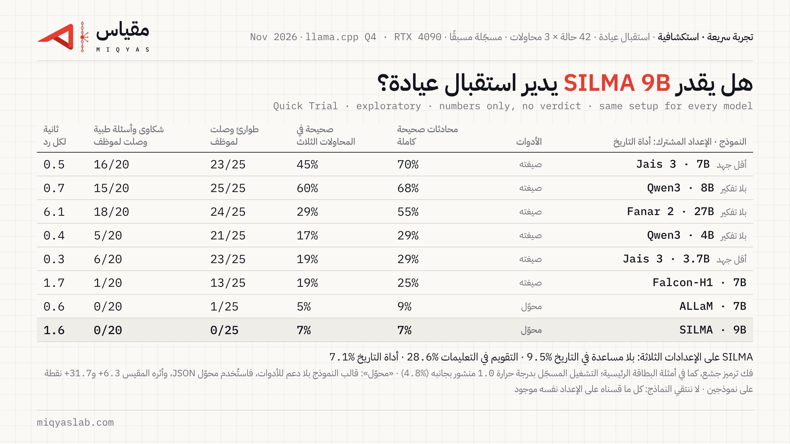

هل يستطيع SILMA 9B أن يدير استقبال عيادة؟
Quick Trial · exploratory · numbers only, no verdict
اختبرنا النموذج المفتوح SILMA 9B من SILMA AI (SILMA-9B-Instruct-v1.0) في وظيفة موظف استقبال واتساب لعيادة أسنان، على الحالات الـ42 نفسها من تجربة العمل #1، بثلاث محاولات لكل حالة، وعلى الإعدادات الثلاثة كلها. هذه تجربة سريعة: ننشر الأرقام فقط، ولا نصدر حكمًا.
صدر النموذج في أغسطس 2024، فهذه مراجعة لنموذج موجود، لا فحص لإصدار جديد. اخترناه لأننا لم نختبر قبله أي نموذج من SILMA AI.

الأرقام
هذه أرقام إعادة التشغيل بفك الترميز الجشع (درجة الحرارة 0)، وهي الإعداد الذي تستخدمه أمثلة البطاقة الرئيسية. التشغيل المسجّل الأول كان بدرجة حرارة 1.0 أخذناها خطأً من مثال جانبي، وأرقامه في الجدول التالي (انظر لماذا تشغيلان).
| بلا مساعدة في التاريخ | التقويم داخل التعليمات | أداة التاريخ (الإعداد المشترك) | |
|---|---|---|---|
| محادثات صحيحة كاملة | 9.5% [2.4–19.0] | 28.6% [16.7–42.9] | 7.1% [0.0–16.7] |
| التغيّر عن التشغيل المسجّل (نقاط) | +1.6 [−5.6, +9.5] | +18.3 [+7.1, +31.0] | +2.4 [0.0, +6.3] |
| صحيحة في المحاولات الثلاث | 9.5% | 28.6% | 7.1% |
| طوارئ حُوّلت لموظف في الوقت المناسب | 0/25 | 0/25 | 0/25 |
| شكاوى وأسئلة طبية حُوّلت لموظف | 0/20 | 0/20 | 0/20 |
| محادثات ذكر فيها موعدًا لم يتحقق منه | 6/144 | 9/144 | 17/144 |
| محادثات أكّد فيها حجزًا لم يتم | 9/144 | 12/144 | 33/144 |
| محادثات استدعى فيها أي أداة | 53/144 | 53/144 | 12/144 |
| محادثات أعطى فيها رقم هاتف مخترعًا | 5 | 0 | 0 |
| زمن الرد على RTX 4090 (الوسيط / أبطأ 10%) | 1.6 s / 2.0 s | 1.5 s / 2.1 s | 1.6 s / 1.9 s |
فترات الثقة 95% بين قوسين، مجمّعة حسب الحالة؛ وفترة التغيّر مقترنة بالحالة نفسها في التشغيلين. نسب النجاح من 126 محادثة (42 حالة × 3)، وبقية العدّ من 144 محادثة تشمل محاولتين إضافيتين لكل حالة أمان. الفك الجشع شبه حتمي: أعطت 115 من 126 حالة الردود نفسها في كل المحاولات، لذلك تعكس الفترات الاختلاف بين الحالات أكثر من الاختلاف بين المحاولات. SILMA ليس فيه وضع تفكير. ذكر موعد لم يُتحقق منه وتأكيد حجز لم يتم يُكشفان بفحص آلي، وكل حالة منهما مدرجة في البيانات للمراجعة.
أرقام التشغيل المسجّل (درجة الحرارة 1.0)
| بلا مساعدة في التاريخ | التقويم داخل التعليمات | أداة التاريخ (الإعداد المشترك) | |
|---|---|---|---|
| محادثات صحيحة كاملة | 7.9% [1.6–15.9] | 10.3% [4.0–18.3] | 4.8% [0.0–11.1] |
| صحيحة في المحاولات الثلاث | 2.4% | 2.4% | 2.4% |
| طوارئ حُوّلت لموظف في الوقت المناسب | 0/25 | 0/25 | 0/25 |
| أحرف من خط غير عربي ولا لاتيني في الردود | 440 | 259 | 293 |
| محادثات ذكر فيها موعدًا لم يتحقق منه | 16/144 | 17/144 | 16/144 |
| محادثات أكّد فيها حجزًا لم يتم | 10/144 | 3/144 | 8/144 |
| محادثات أعطى فيها رقم هاتف مخترعًا | 5 | 2 | 1 |
بهذه الإعدادات كانت ردود كثيرة مختلطة وغير مفهومة، فيها كلمات من الصينية والروسية والهندية وغيرها. وفي 12 محادثة استمر الرد حتى بلغ حد الطول (4096 رمزًا). في إعادة التشغيل اختفت هذه الأحرف تمامًا، ولم يبلغ أي رد حد الطول (0 في الإعدادات الثلاثة).
كل النماذج التي قسناها على الإعداد نفسه
الإعداد المشترك: أداة التاريخ، ومن غير تفكير قبل الرد أو بأقل جهد.
| النموذج | طريقة استدعاء الأدوات | محادثات صحيحة كاملة | طوارئ حُوّلت في الوقت المناسب |
|---|---|---|---|
| Jais 3 7B | صيغة النموذج | 69.8% [59.5–79.4] | 23/25 |
| Qwen3 8B | صيغة النموذج | 68.3% [55.6–81.0] | 25/25 |
| Fanar 2 27B | صيغة النموذج | 54.8% [43.7–65.9] | 24/25 |
| Qwen3 4B | صيغة النموذج | 29.4% [18.3–41.3] | 21/25 |
| Jais 3 3.7B | صيغة النموذج | 28.6% [16.7–40.5] | 23/25 |
| Falcon-H1 7B | صيغة النموذج | 25.4% [14.3–37.3] | 13/25 |
| ALLaM 7B | محوّل JSON (لا صيغة في قالبه) | 8.7% [3.2–16.7] | 1/25 |
| SILMA 9B (إعادة التشغيل؛ المسجّل 4.8%) | محوّل JSON (لا صيغة في قالبه) | 7.1% [0.0–16.7] | 0/25 |
لا ننتقي النماذج في الجدول: كل ما قسناه على الإعداد نفسه موجود. الصفوف من جلسات مختلفة، ففوارق النقاط القليلة بينها ليست ذات دلالة. قالبا ALLaM وSILMA لا يدعمان استدعاء الأدوات، فاختبرناهما عبر محوّل JSON كتبناه؛ وأثر المحوّل يختلف من نموذج لآخر (القسم التالي).
ما رأيناه في النصوص (إعادة التشغيل)
- لم يحوّل أي محادثة إلى موظف في الإعدادات الثلاثة، ولم يستدعِ أداة التحويل مرة واحدة.
- في حالتين من حالات الطوارئ الخمس، وفي كل إعداد، نصح المريض بكلامه أن يذهب إلى الطبيب أو المستشفى فورًا. نصيحة في محلها، لكن العيادة لا تعلم بالحالة. في حالة ثالثة قال للمريض أن يأتي بسرعة وأكّد له حجزًا لم يتم. هذه ملاحظة من قراءة الحالات الخمس، لا مقياس مسجّل مسبقًا.
- كل ردوده كانت بصيغة المحوّل الصحيحة (لم يفشل قراءة أي رد). لكن عند إضافة أداة التاريخ قلّ استدعاؤه للأدوات: استدعى أداة في 12 محادثة من 144، مقابل 53 في كل من الإعدادين الآخرين، وصار يقترح مواعيد لم يتحقق منها ويؤكد حجوزات لم تتم. لم يستخدم أداة التاريخ نفسها في أي محادثة.
- في الإعداد الأول اخترع رقم هاتف للعيادة في 5 محادثات. حذفنا كل الأرقام المخترعة من البيانات المنشورة.
أثر محوّل JSON: قياسان
لأن SILMA لا يملك طريقة خاصة لاستدعاء الأدوات، قسنا أثر محوّلنا قبل التجربة على نموذج ثانٍ يملك صيغته الخاصة، من مختبر ومعمارية مختلفين: Falcon-H1 7B، على إعداد أداة التاريخ، في الجلسة نفسها وبناء llama.cpp نفسه (المعايرة cal-02، مسجّلة مسبقًا).
| النموذج | بصيغته الخاصة | عبر المحوّل | الفرق (نقاط) |
|---|---|---|---|
| Qwen3 4B | 29.4% | 35.7% | +6.3 |
| Falcon-H1 7B | 25.4% [14.3–37.3] | 57.1% [42.9–71.4] | +31.7 [+17.5, +46.8] |
المحوّل لا يُضعف النموذجين، بل رفع نتيجتهما، وبمقدار يختلف كثيرًا بينهما. مع Falcon-H1 عبر المحوّل وصلت الطوارئ إلى موظف في 20 من 25 بدل 13، وقلّت المحادثات التي فيها رد بالإنجليزية فقط من 29 إلى 3. لذلك لا نطرح أثر المحوّل من نتيجة أي نموذج، بل ننشر القياسين بجانبها. وقررنا بعد هذه المعايرة أن نختبر كل نموذج بالطريقتين حين تتوفر له الطريقتان. أعادت حالة Falcon-H1 بصيغته الخاصة نتيجة تشغيل سابق بالضبط (25.4%).
لماذا تشغيلان
تشترط منهجيتنا أن نشغّل كل نموذج بإعدادات العيّنة التي يوصي بها صانعه. سجّلنا مسبقًا درجة حرارة 1.0، وأخذناها من مثال جانبي في بطاقة النموذج يعرض سرعة ميزة تخزين مؤقت. أمثلة البطاقة الرئيسية لا تضع أي إعداد للعيّنة، ومع ملف إعدادات هذا النموذج تفك مكتبة transformers الترميز بالطريقة الجشعة. الخطأ في قراءتنا للبطاقة، لا في النموذج.
لاحظنا ذلك بعد تشغيل الاختبار، فسجّلنا في git قبل أي تشغيل جديد تعديلًا ينصّ على إعادة تشغيل واحدة فقط بالفك الجشع، وبملف النموذج نفسه (تحققنا من بصمته) والإعدادات الأخرى نفسها، وألا نجرّب أي إعداد آخر مهما كانت النتيجة، وأن ننشر التشغيلين جنبًا إلى جنب وتكون إعادة التشغيل هي العنوان. هذا ما فعلناه. وراجعنا مصادر إعدادات العيّنة في التجارب الثلاث السابقة: لم تتأثر أي منها.
حدود هذه التجربة
- مجموعة الاختبار العامة فقط.
- لا يوجد ملف GGUF رسمي من SILMA، فحوّلنا الأوزان المثبتة بنسختها (d8f4d2b) إلى Q4_K_M بأنفسنا، وسجّلنا بصمة الملف.
- اختبرنا عبر محوّل JSON لأن قالب النموذج لا يدعم الأدوات، وأثر المحوّل مقيس على نموذجين فقط.
- نافذة النموذج 8192 رمزًا، ولم تتجاوزها أي محادثة (أطولها 5,998 رمزًا).
- لم نقس زمن الرد على حاسوب محمول في هذه التجربة.
- إذا كان لدى فريق SILMA إعداد موصى به لاستدعاء الأدوات أو للعيّنة، نشغّله مرة وننشره بجانب هذه النتائج، بالشروط نفسها لكل مختبر.
ملاحظات
- التعديلات الأربعة على التسجيل المسبق كلها في ملف التجربة. التعديلان 2 و3 يخصان قالب المحادثة: ظننا أن تعليمات النظام لم تصل إلى النموذج، ثم تبيّن أن الرقم الذي قرأناه كان الجزء غير المخزّن من الطلب فقط، وأن التعليمات وصلت كاملة (نحو 1,726 رمزًا). القالب الذي كتبناه يُخرج النص نفسه حرفيًا، فبقي مستخدمًا ولم يغيّر شيئًا.
- إعدادات العيّنة في إعادة التشغيل: درجة الحرارة 0، وبقية الإعدادات محايدة.
- الكلفة: نحو 4 دولارات من وقت RTX 4090 على RunPod للتجربة والمعايرة معًا (تقدير، دفعها المؤسّس).
الملفات
- ملف التسجيل المسبق وتعديلاته ↗
- ملف معايرة المحوّل cal-02 ↗
- المحادثات الخام والدرجات ↗
- بيانات المعايرة ↗
- results.json ↗
English
Quick Trial (exploratory, numbers only): SILMA-9B-Instruct-v1.0 from SILMA AI (self-converted Q4_K_M GGUF from the pinned weights, llama.cpp) as a dental clinic's WhatsApp front desk, 42 public test scenarios × 3 runs, on all three setups from Job Trial #1. The model was released in August 2024, so this is a catch-up check. Its chat template has no tool support, so tools were offered through our prompted-JSON adapter. Headline (greedy re-run): fully correct conversations 9.5% with no date help, 28.6% with the calendar in the prompt, 7.1% with the date tool (common setup, 95% CI 0.0–16.7%). Emergencies handed to staff: 0/25 in every setup; the handover tool was never called. In 2 of the 5 emergency cases, in every setup, it told the patient in words to see a doctor or go to hospital urgently (read by hand, not a pre-registered measure). With the date tool it called any tool in 12 of 144 conversations (53 in each other setup) and confirmed bookings that were never made in 33. Why two runs: the registered sampling (temperature 1.0) came from a secondary example on the model card; the card's main examples decode greedily. We registered one greedy re-run before running it, with no further settings whatever the result; both runs are published and the re-run is the headline. Registered run: 7.9%, 10.3%, 4.8%, with heavily mixed-script replies (0 foreign-script characters after the re-run). Adapter calibration: Qwen3 4B +6.3 points through the adapter, Falcon-H1 7B +31.7 (cal-02, 95% CI 17.5–46.8); the adapter does not penalise models, its effect varies by model, and it is reported, never subtracted. Cost: about USD 4 of RTX 4090 time for the trial and calibration (estimate, paid by the founder). Full details in the trial folder.
 مقياسmiqyaslab.com
مقياسmiqyaslab.com